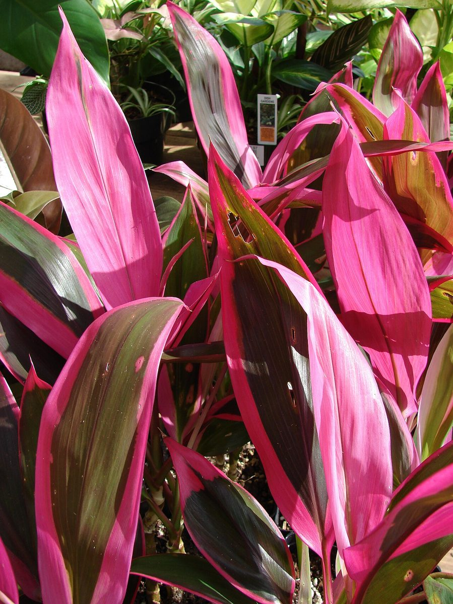

Cordyline fruticosa
kī, ti · ti plant, ti, cabbage palm


Quick facts
| Family | Asparagaceae |
|---|---|
| Scientific name | Cordyline fruticosa |
| Hawaiian name(s) | kī, ti |
| English name(s) | ti plant, ti, cabbage palm |
| Status | Polynesian introduction (canoe plant) |
| Conservation | — |
| Coastal zones | Valley mouth Riparian |
| Occurrence | Persistent remnants of pre-depopulation plantings at Kalalau, Nuʻalolo Kai, and Miloliʻi valley bottoms and along adjacent stream margins; also naturalized in mesic forest higher up. On the unpopulated coast, kī signals a former Hawaiian dwelling or garden site as strongly as any single plant species. |
How to identify
- Growth form
- Unbranched palm-like shrub 1–4 m with a slender ringed stem and a single terminal rosette of leaves at the top. Older plants often develop side shoots from the base rather than branching aloft.
- Size
- 1–4 m tall, occasionally to 5 m in sheltered valleys.
- Leaves
- Large, lanceolate to oblong-lanceolate, 30–60 × 5–10 cm, spirally arranged around the stem tip in a dense rosette, glossy green (some cultivars red or green-red variegated). Venation parallel — the typical monocot pattern.
- Flowers
- Large drooping terminal panicles 30–50 cm long carrying many small white-to-pinkish flowers, each with six spreading tepals.
- Fruit / seed
- Small round red berries 5–10 mm in diameter, in loose clusters following the panicle position.
- Bark / stem
- Slender pale-green to grey stem; marked with the characteristic ring scars of fallen leaf bases (similar to a small palm).
- Where it sits on the coast
- Valley bottoms and stream margins at Nā Pali valley mouths; sheltered, moist, and often close to former habitation sites.
Clinchers (features that lock the ID)
- Single unbranched stem topped by a rosette of large lanceolate leaves.
- Stem visibly ring-scarred from fallen leaf bases (palm-like).
- Drooping panicle of small white-pink flowers or red berries at shoot tip.
- Valley-bottom position at Nā Pali marks it as almost certainly a Hawaiian planting remnant.
Look-alikes
- Dracaena spp. (dracaenas) — Dracaenas share the general palm-like rosette form but are almost always cultivated ornamentals rather than remnants of Hawaiian valley plantings; wild kī on the Nā Pali coast is almost never a dracaena. If in doubt, look at the flower and fruit: dracaena inflorescences are more branched-cymose, and the fruit is orange to yellow, not the small red berry of kī.
- Young Pandanus tectorius (hala) — Young hala can look superficially rosette-topped, but hala leaves are strap-shaped with a spiny margin and midrib and are 1–2 m long; kī leaves are shorter, wider, and completely spine-free. Hala also develops prop roots early.
Ecology
Widely naturalized across the Pacific from Southeast Asian origin; spread by Polynesian voyagers and now a durable component of lowland Hawaiian valley bottoms. Reproduces vegetatively from stem sections (traditionally propagated this way) as well as from seed. [1], [2], [40], [41], [43]
Cultural significance
Kī is one of the most heavily used plants in Hawaiian daily life: leaves for wrapping food (including laulau), for hula skirts (pāʻū), for sandals, for thatch, and for many ceremonial and household purposes; roots historically fermented into an alcoholic beverage (ʻōkolehao) after Western contact. Kī is also associated with spiritual protection in some traditions, and is often planted around homes and heiau. This guide names those relationships; the transmission of leaf-preparation, weaving, and ceremonial practice belongs to Hawaiian cultural practitioners and lineal descendants.